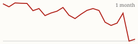
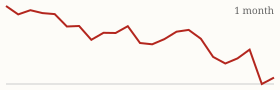

| Today's briefing for operators |
Top line: Stop selling bad deals, go find good ones |
|
| Monday, November 9, 2026 | Late Edition | Curated from 64 voices on X |
|
Real Estate
In This Market, Stop Pushing Bad Deals and Go Find Good Ones
Nick Maccini says the worst use of your time right now is trying to sell a crappy deal. A good deal sells itself; a bad one eats your week and rarely pays.
By @NickMaccini |
Nick Maccini's weekend message to wholesalers: spend all your time finding good deals, not marketing bad ones. When a deal is truly good, multiple buyers want it and it takes no effort to sell. It takes skill to sell it for top dollar, but not to sell it at all. |
Crappy deals are tough to move in any market and take a ton of time. With inventory rising and buyers pickier, the lesson for a CEO is about where the team's hours go: tighten acquisition criteria up front so dispo isn't stuck rescuing contracts that never should have been signed. |
|
| Read on X |
|
Mortgage Rates & Markets | Mortgage Rates Today's average lender rates | 30-year fixed | 7.17% | +0.00 | | 15-year fixed | 6.83% | +0.03 |
Daily change vs. prior day. Source: Mortgage News Daily, as of 11/6/2026 (updated weekdays about 4 PM ET). |
|
S&P 500 Close of Fri, Nov 6 (markets closed since; last close shown) S&P 500 7,376.86 ▲ +23.13 (+0.31%)  Yahoo Finance chart data (daily closes) |
|
Nasdaq Composite Close of Fri, Nov 6 (markets closed since; last close shown) Nasdaq Composite 24,579.43 ▲ +264.43 (+1.09%)  Yahoo Finance chart data (daily closes) |
|
| Real Estate & Deals | South and West active listings chart. Image via @nickgerli1 on X South and West Listings Hit a 10-Year High By @nickgerli1 Nick Gerli counts 854,000 active listings across the South and West in October, the most in a decade and up 158% from the 2021 low. More supply means more motivated sellers and slower retail exits, so underwrite accordingly. Read on X |
A Buyer's Box: 20% Margin Cosmetic Rehabs By @Jacob_Naviaux Jacob Naviaux says he'll buy any cosmetic rehab within 75 miles of Atlanta with a 20% gross margin, every day of the week. It's a clear example of the buy box your dispo team should be collecting from every active buyer. Read on X |
Where AI Helps in Real Estate, and Where It Doesn't By @coleruudjohnson Cole Ruud-Johnson says AI is good for marketing support and data, back-end operations and underwriting support, but terrible at anything human-facing. Automate the back office and keep people on seller conversations. Read on X |
Workforce housing property. Image via @loganjrankin on X 62 Units Off-Market From a Repeat Seller By @loganjrankin Logan Rankin closed 62 more units of workforce housing, bought off-market from a seller he'd bought from before who wanted a simple exit. Same playbook for a decade: relationships with past sellers keep producing deals. Read on X |
| AI Briefing | Anthropic: Claude Now 'Dreams' to Fix Its Memory By @AnthropicAI A new Anthropic engineering post explains how a 'dreaming' process lets Claude organize what it has learned, correct its mistakes and find information faster next time. Read on X |
Muse Wonder announcement. Image via @AIatMeta on X Meta Brings Muse Wonder Skills to Meta AI By @AIatMeta Meta is adding specialized models trained with Muse Wonder, including Active Memory, to Muse and Meta AI for complex work and everyday tasks. Read on X |
DeepMind Agents Find Weaknesses in Old RSA Encryption By @GoogleDeepMind Guided by humans, Google DeepMind's models uncovered two major weaknesses in legacy 1024-bit RSA systems, a sign AI is speeding up security research. Read on X |
5 Prompts to Turn Any Topic Into a Visual Guide By @Sabrina_Ramonov Sabrina Ramonov shares five simple ChatGPT and Claude prompts that turn a topic into a timeline, diagram, mind map or one-page guide. Handy for training docs and SOPs. Read on X |
Data Centers Become a Political Issue By @PeterDiamandis Peter Diamandis notes 56% of voters oppose big tech infrastructure, and Goldman Sachs warns 45% of planned US data center build-out could face restrictions. Read on X |
Nvidia Board Investigates Jensen Huang Report By @kimmonismus Nvidia's board launched an independent investigation into reports that CEO Jensen Huang was targeted by a foreign intelligence operation, while saying it has confidence in his leadership. Read on X |
| Business & Leadership | The CEO's Real Job: Choosing Which Loss to Take By @LeilaHormozi Leila Hormozi says being a CEO isn't about making good decisions, since win-win calls are common sense. The job is managing lose-lose decisions: choosing which loss to take and how to take it. Read on X |
What $1M-a-Year Operators Have in Common By @coleruudjohnson Cole Ruud-Johnson says nearly everyone he knows netting $1M+ a year in real estate has someone in the org who is really good at sales. It can be the founder or a hire, but someone has to own it. Read on X |
Maccini Replaces His VA With an AI Assistant By @NickMaccini Nick Maccini let his personal VA go because his AI assistant now covers the work, freeing up $840 a month. Worth auditing which admin roles on your team are really task lists an agent could run. Read on X |
A Great Plan Can Fake Progress By @danmartell Dan Martell's reminder: a great plan can fool you into thinking you're making progress. Measure output, not planning. Read on X |
|
The Hyre Times is compiled each morning by Groky from public posts on X plus public rate and market data. Summaries reflect the authors' own claims and have not been independently verified. Not financial advice. © 2026 Hyre Times. |
|